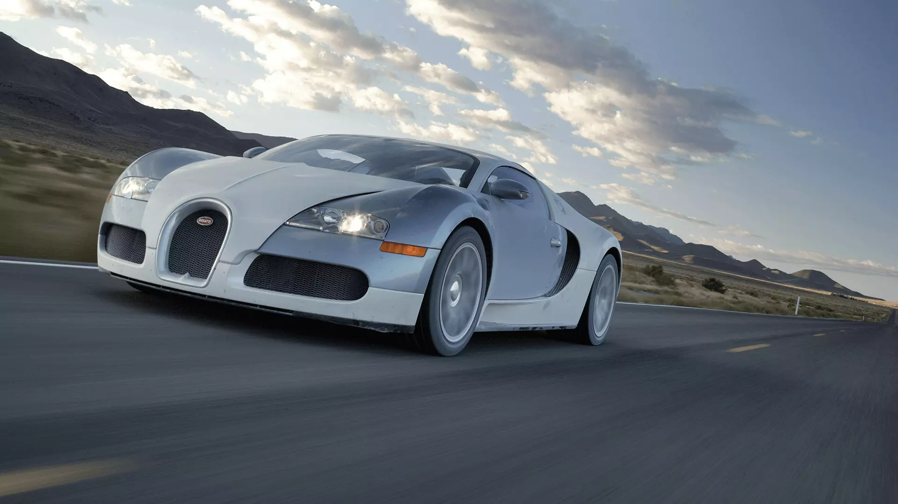
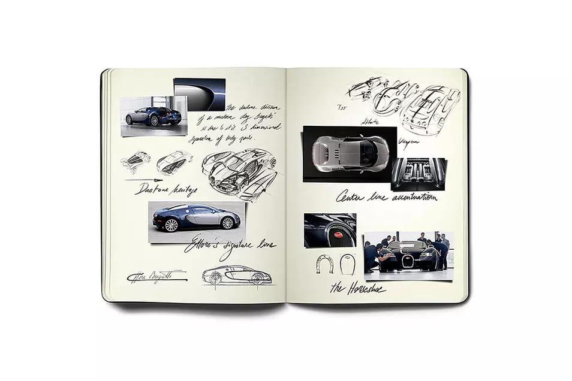
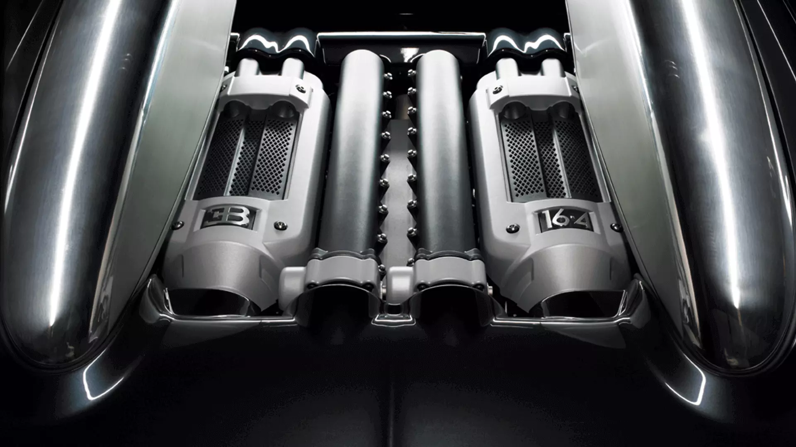

since its launch in 2005, the bugatti veyron has been regarded as a Bugatti set the benchmark even higher with the plan of turning the supercar into a
supercar of superlative quality. it was a real challenge for luxury road car suitable for everyday use. The development of the Veyron was one
developers to fulfil the specifications that the new supercar was of the greatest technological challenges ever known in the automotive industry.
supposed to meet: over 1,000 hp, a top speed of over 400 km/h
and the ability to accelerate from 0 to 100 in under three seconds. even Barely any parts, components or systems could be taken from existing car
experts thought it was impossible to achieve these performance specs concepts and used in the Veyron. Everything had to be developed from scratch in
on the road. but that was not all. order to achieve the performance specs and then everything had to be
implemented in the car. The process also drew on the experiences of other
industries in which materials and systems are routinely subject to extreme speeds
and forces, such as aviation and space travel. The Veyron is the first – and the only
– supercar to be developed and constructed with a series configuration that can
master any driving scenario at any time. Even ten years after its launch, the
supercar is still setting benchmarks and inspiring emotion and enthusiasm across the
globe.


The Chiron can accelerate from 0–97 km/h (0–60 mph) in 2.5 seconds according to the manufacturer,0–200 km/h (0–124 mph) in 6.5 seconds and 0–300 km/h (0–186 mph) in 13.6 seconds. In a world-record-setting test at the time in 2017, the Chiron reached 400 km/h (249 mph) in 32.6 seconds, after which it needed 9.4 seconds to brake to standstill.